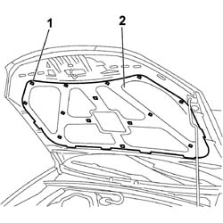

7025A22 SOUNDPROOFING LINING FOR BONNET LID - R+R
- Path
- Procedures > 70 FITTINGS > 7025 COMPARTMENT COVERS > 7025A BONNET LID > 7025A22 SOUNDPROOFING LINING FOR BONNET LID - R+R
- Kind
- repair procedure (removal / refitting; the operation number is the code)
- Applies to
- all engines; all production periods
- Interactive page
- https://sloeber94.github.io/elrnDB-fCrm/en/#/194000958
Applies to: all engines; all production periods
 Removing
Removing
 Refitting
Refitting1. Using the special tool, release the retaining buttons from the sound insulation.
2. Remove the sound insulation from the bonnet lid.
Tool | Description | Function | Validity |
|---|---|---|---|
1878077000 | Knife | Retainer removal |

Applies to: all engines; all production periods
Refitting
Removing- Check the condition of the retaining buttons and replace them if necessary.
- Place the sound insulation in its housing and secure it to the bonnet using the special retaining buttons.
- Make sure that the retaining buttons are all correctly inserted in their housings.